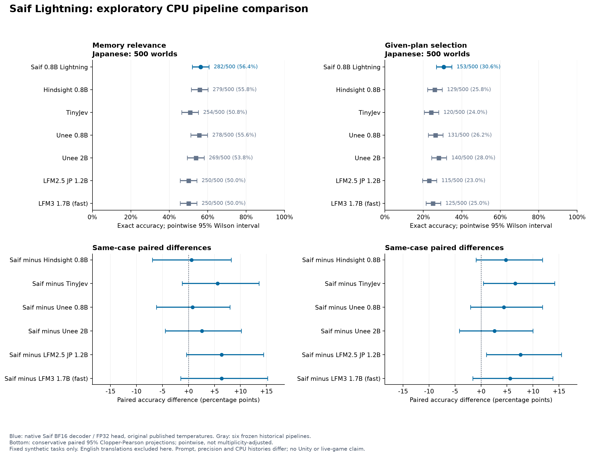

Saif LightningのCPU比較
日本語の正解率は、記憶判定282/500 (56.4%)、作戦4択153/500 (30.6%)でした。 Saifの主1,200試行に含まれる実行・形式の失敗は0件です。既存6実装と同じ固定入力で比較した、探索的なパイプライン測定です。
主評価は日本語の各500場面です。同じ世界に対応する英語訳各100件は副評価として分けています。日本語・英語や異なる課題を合計した1,200件は推論試行数であり、独立した世界数や合算CIに置き換えていません。
固定した合成ルールに沿った記憶の関連判定と、提示済み4作戦の選択を測りました。実ゲームの勝率、自由な作戦生成、将来予測、Unity・Sentis内の動作や速度は測っていません。native prompt・量子化・回答方法・過去のCPU割り当てが異なり、モデル本体だけの効果として扱えません。
日本語の主評価
| 実装 | 記憶の関連判定 | 提示された作戦の4択 |
|---|---|---|
| Saif 0.8B Lightning | 282/500 (56.4%)Wilson 95%: 52.0%〜60.7% | 153/500 (30.6%)Wilson 95%: 26.7%〜34.8% |
| Hindsight 0.8B | 279/500 (55.8%)Wilson 95%: 51.4%〜60.1% | 129/500 (25.8%)Wilson 95%: 22.2%〜29.8% |
| TinyJev | 254/500 (50.8%)Wilson 95%: 46.4%〜55.2% | 120/500 (24.0%)Wilson 95%: 20.5%〜27.9% |
| Unee 0.8B | 278/500 (55.6%)Wilson 95%: 51.2%〜59.9% | 131/500 (26.2%)Wilson 95%: 22.5%〜30.2% |
| Unee 2B | 269/500 (53.8%)Wilson 95%: 49.4%〜58.1% | 140/500 (28.0%)Wilson 95%: 24.2%〜32.1% |
| LFM2.5 JP 1.2B | 250/500 (50.0%)Wilson 95%: 45.6%〜54.4% | 115/500 (23.0%)Wilson 95%: 19.5%〜26.9% |
| LFM3 1.7B (fast) | 250/500 (50.0%)Wilson 95%: 45.6%〜54.4% | 125/500 (25.0%)Wilson 95%: 21.4%〜29.0% |

上段は各実装・各課題の95% Wilson区間、下段は同じ設問の正誤を対応させた区間です。区間はこの合成問題の生成方法・構成に条件づけた値です。複数モデルを同時に95%で覆う区間ではありません。
Saifと既存6実装の対応比較
| 課題 | Saifの比較相手 | Saifだけ正解 | 相手だけ正解 | 正解率の差 | 対応95%区間 |
|---|---|---|---|---|---|
| 記憶の関連判定 | Hindsight 0.8B | 111 | 108 | +0.6 pt | -6.9〜+8.2 pt |
| 記憶の関連判定 | TinyJev | 119 | 91 | +5.6 pt | -1.2〜+13.6 pt |
| 記憶の関連判定 | Unee 0.8B | 94 | 90 | +0.8 pt | -6.2〜+8.0 pt |
| 記憶の関連判定 | Unee 2B | 107 | 94 | +2.6 pt | -4.4〜+10.2 pt |
| 記憶の関連判定 | LFM2.5 JP 1.2B | 123 | 91 | +6.4 pt | -0.4〜+14.5 pt |
| 記憶の関連判定 | LFM3 1.7B (fast) | 159 | 127 | +6.4 pt | -1.5〜+15.2 pt |
| 提示された作戦の4択 | Hindsight 0.8B | 85 | 61 | +4.8 pt | -0.9〜+11.8 pt |
| 提示された作戦の4択 | TinyJev | 102 | 69 | +6.6 pt | +0.5〜+14.1 pt |
| 提示された作戦の4択 | Unee 0.8B | 100 | 78 | +4.4 pt | -2.0〜+11.8 pt |
| 提示された作戦の4択 | Unee 2B | 99 | 86 | +2.6 pt | -4.2〜+10.0 pt |
| 提示された作戦の4択 | LFM2.5 JP 1.2B | 115 | 77 | +7.6 pt | +1.1〜+15.5 pt |
| 提示された作戦の4択 | LFM3 1.7B (fast) | 130 | 102 | +5.6 pt | -1.6〜+13.8 pt |
差はSaif − 比較相手です。対応区間は事前に固定した保守的なClopper–Pearson長方形の射影を使います。すべてpointwiseの探索的95%区間で、多重比較補正は行っていません。新たな確証的p値や同等性の結論は出さず、以前のHolm補正2課題の解析は変更していません。
誤りの内容
| 記憶判定 / JA500 | TP | TN | FP | FN | 失敗・正例 | 失敗・負例 |
|---|---|---|---|---|---|---|
| Saif 0.8B Lightning | 159 | 123 | 127 | 91 | 0 | 0 |
| Hindsight 0.8B | 239 | 40 | 210 | 11 | 0 | 0 |
| TinyJev | 93 | 161 | 89 | 157 | 0 | 0 |
| Unee 0.8B | 186 | 92 | 158 | 64 | 0 | 0 |
| Unee 2B | 133 | 136 | 114 | 117 | 0 | 0 |
| LFM2.5 JP 1.2B | 250 | 0 | 250 | 0 | 0 | 0 |
| LFM3 1.7B (fast) | 0 | 250 | 0 | 250 | 0 | 0 |
TPは関連のある新情報を採用、TNは不要情報を除外、FPは不要情報を採用、FNは必要な情報を見落とした件数です。実行失敗は正解率では誤答に含め、二値の混同行列とは別に残します。
| 作戦4択 / JA500 | 正解 | 既知の制約違反 | 実行可能だが最適でない | 失敗・不正 | 平均順位損失 |
|---|---|---|---|---|---|
| Saif 0.8B Lightning | 153 | 308 | 39 | 0 | 0.667 |
| Hindsight 0.8B | 129 | 326 | 45 | 0 | 0.708 |
| TinyJev | 120 | 338 | 42 | 0 | 0.733 |
| Unee 0.8B | 131 | 326 | 43 | 0 | 0.714 |
| Unee 2B | 140 | 315 | 45 | 0 | 0.698 |
| LFM2.5 JP 1.2B | 115 | 339 | 46 | 0 | 0.739 |
| LFM3 1.7B (fast) | 125 | 333 | 42 | 0 | 0.718 |
順位損失は与えられた4候補の順位を0〜1にした値で、低いほど良好です。ゲーム内の損害や勝率を表す数値ではありません。制約違反の候補を後処理で実行可能な候補へ置き換えていません。
英語の副評価
各100件は日本語世界の対応訳です。日本語500件の主評価に合算していません。
| 実装 | 記憶の関連判定 | 提示された作戦の4択 |
|---|---|---|
| Saif 0.8B Lightning | 59/100 (59.0%)Wilson 95%: 49.2%〜68.1% | 33/100 (33.0%)Wilson 95%: 24.6%〜42.7% |
| Hindsight 0.8B | 55/100 (55.0%)Wilson 95%: 45.2%〜64.4% | 26/100 (26.0%)Wilson 95%: 18.4%〜35.4% |
| TinyJev | 49/100 (49.0%)Wilson 95%: 39.4%〜58.7% | 33/100 (33.0%)Wilson 95%: 24.6%〜42.7% |
| Unee 0.8B | 49/100 (49.0%)Wilson 95%: 39.4%〜58.7% | 32/100 (32.0%)Wilson 95%: 23.7%〜41.7% |
| Unee 2B | 55/100 (55.0%)Wilson 95%: 45.2%〜64.4% | 25/100 (25.0%)Wilson 95%: 17.5%〜34.3% |
| LFM2.5 JP 1.2B | 55/100 (55.0%)Wilson 95%: 45.2%〜64.4% | 26/100 (26.0%)Wilson 95%: 18.4%〜35.4% |
| LFM3 1.7B (fast) | 45/100 (45.0%)Wilson 95%: 35.6%〜54.8% | 27/100 (27.0%)Wilson 95%: 19.3%〜36.4% |
英語各100件の対応比較
| 課題 | Saifの比較相手 | Saifだけ正解 | 相手だけ正解 | 正解率の差 | 対応95%区間 |
|---|---|---|---|---|---|
| 記憶の関連判定 | Hindsight 0.8B | 20 | 16 | +4.0 pt | -13.4〜+22.9 pt |
| 記憶の関連判定 | TinyJev | 23 | 13 | +10.0 pt | -5.8〜+29.4 pt |
| 記憶の関連判定 | Unee 0.8B | 27 | 17 | +10.0 pt | -7.3〜+30.4 pt |
| 記憶の関連判定 | Unee 2B | 23 | 19 | +4.0 pt | -14.4〜+23.7 pt |
| 記憶の関連判定 | LFM2.5 JP 1.2B | 20 | 16 | +4.0 pt | -13.4〜+22.9 pt |
| 記憶の関連判定 | LFM3 1.7B (fast) | 39 | 25 | +14.0 pt | -5.7〜+36.4 pt |
| 提示された作戦の4択 | Hindsight 0.8B | 23 | 16 | +7.0 pt | -10.2〜+26.6 pt |
| 提示された作戦の4択 | TinyJev | 25 | 25 | +0.0 pt | -20.1〜+20.1 pt |
| 提示された作戦の4択 | Unee 0.8B | 17 | 16 | +1.0 pt | -16.6〜+19.0 pt |
| 提示された作戦の4択 | Unee 2B | 25 | 17 | +8.0 pt | -9.5〜+28.1 pt |
| 提示された作戦の4択 | LFM2.5 JP 1.2B | 27 | 20 | +7.0 pt | -11.5〜+27.5 pt |
| 提示された作戦の4択 | LFM3 1.7B (fast) | 28 | 22 | +6.0 pt | -13.1〜+26.8 pt |
CPUの応答時間とメモリ
| 時間の範囲 | 件数 | 平均 | 中央値 | 95パーセンタイル |
|---|---|---|---|---|
| 全adapter・全試行 | 1200 | 1,287.6 ms | 1,249.7 ms | 1,760.4 ms |
| native API・記録のある成功試行 | 1200 | 1,286.8 ms | 1,248.9 ms | 1,759.9 ms |
全adapter時間は公式native推論に加え、呼び出し後のtoken layout・token数・出力の検査を含みます。native API時間は公式SaifEngine.__call__のwall timeです。失敗時にnative時間を得られなければ、その時間を作り足さず件数を示します。import・モデルロード・固定warmupは両方の応答時間から除外しています。request間のKV prefix再利用はありません。request内部の公式shared-prefix処理は保持しています。
| token数の範囲 | 既知件数 | 不明件数 | 合計 | 平均 | 中央値 | 95パーセンタイル |
|---|---|---|---|---|---|---|
| 実際のnative入力token ID数 | 1200 | 0 | 462000 | 385.0 | 381.0 | 480.0 |
| 生成token数 | 1200 | 0 | 0 | 0.0 | 0.0 | 0.0 |
| セッション | 開始時の完了件数 | adapter初期化 | 固定1回のwarmup | warmup状態 |
|---|---|---|---|---|
| 1 | 0 | 4,491.5 ms | 979.3 ms | complete |
| メモリ指標 | 観測値 |
|---|---|
| 1秒間隔サンプルの最大VmRSS | 1.933 GiB |
| 同サンプルで確認したVmHWM | 1.937 GiB |
workerプロセス全体の観測で、import・モデルロード・warmupも含みます。サンプル間の最後の増加を取り逃す可能性があります。mmapしたチェックポイント、tmpfs上の重み、cgroup全体の使用量・ページキャッシュとは測定範囲が異なります。
CPU: AMD EPYC9V74 virtualCPU, cgroupquota4cores。batch 1、モデルを直列実行。intra-op 4、inter-op 5、affinity [0, 1, 2, 3]。過去実装の時間との比較にはCPU配分と入力形式の違いが含まれます。
native入力・採点・実行条件
- 公式の専用decision headを用いて、元のstate/questionsを1回のAPI呼び出しに渡しました。正解・監査結果・設問IDをpromptへ加えず、一般的なchat生成や1文字grammarへ置き換えていません。
- decoderはBF16、readout headはFP32、無量子化です。公開済み温度はchoice 1.349205、noul 1.669018（score 0.536053）を保持しました。この問題への温度fit・追加softmax・確率floor・再正規化は行っていません。score型は主試験の対象外です。
- 関連判定はnative p(true) ≥ 0.5、4択は元の候補順のnative argmaxで採点しました。公開温度を通った確率はゲーム内の成功確率を意味しません。実行失敗・形式不正は誤答に残しています。
- 公式singlepassのsegmented bidirectional attention、joint reading、read_twice=false、fast_path=trueを保持。CUDA用causal_conv1d / flash-linear-attentionが使えないCPUでは、PyTorch reference fallbackを使用しました。公式sourceは未変更です。
- Python 3.12.14、Torch 2.9.1+cpu、Transformers 5.17.0。model cardのTorch 2.8に対し、このCPU測定は2.9.1です。作者の公表18msはRTX 5070 Tiでの値で、このCPU測定の値ではありません。
別枠の単純事実チェック
以前公開されたランプの色4問・引き出しの開閉4問を、Saifの主試験結果を見る前に固定しました。8つの既知の設問に対する正解は8件、実行失敗は0件です。主試験と別run・別warmupで各1回実行しました。この8問から一般的な精度や信頼区間・有意差を推定せず、主1,200試行にも加算しません。
| 固定設問ID | 観測された事実 | 期待される回答 | Saif回答 | 判定 |
|---|---|---|---|---|
| control_lamp_blue_ja | 見えているランプは青色です。 | {"color": "blue"} | {"color": "blue"} | 正解 |
| control_lamp_red_ja | 見えているランプは赤色です。 | {"color": "red"} | {"color": "red"} | 正解 |
| control_lamp_yellow_ja | 見えているランプは黄色です。 | {"color": "yellow"} | {"color": "yellow"} | 正解 |
| control_lamp_green_ja | 見えているランプは緑色です。 | {"color": "green"} | {"color": "green"} | 正解 |
| control_drawer_closed_ask_closed_ja | 引き出しは閉じています。 | {"drawer": true} | {"drawer": true} | 正解 |
| control_drawer_closed_ask_open_ja | 引き出しは閉じています。 | {"drawer": false} | {"drawer": false} | 正解 |
| control_drawer_open_ask_closed_ja | 引き出しは開いています。 | {"drawer": false} | {"drawer": false} | 正解 |
| control_drawer_open_ask_open_ja | 引き出しは開いています。 | {"drawer": true} | {"drawer": true} | 正解 |
出典と保存物
モデル作者・出典: GyrTechnology / saif-0.8b-lightning（固定revision）。ライセンスはCC-BY-NC-4.0です。ユーザーが明示した非商用検証として実施しました。モデル本体・公式source・公開温度は変更していません。CPU fallbackと周辺adapter・集計・表示をこの検証で使用しています。
ケース別CSV · 図のSVG。以下のSHA-256は入力ファイルの保存時点を示します。

| 保存物 | ファイル | SHA-256 | bytes |
|---|---|---|---|
| 本レポートの統計JSON | saif-model-statistics.json | 041261d838ed29f74d21513b1861df4a70c0e67db28f5ca5323790fb0aec8c0e | 107750 |
| 推論前に固定したプロトコル | saif-benchmark-protocol.json | d017040630b5e1b31597730ef40e9224d7b9b014ba1daf130121afa3cad1d35a | 9594 |
| 1,200件の固定入力・正解 | decisions.json | 064aad0db0e2c62353555a60ed8b89bfe05df6c45f7bbeff147fbbe098dac88f | 4505614 |
| checkpoint_manifest | model-manifest.json | d5829a3fcb3a666c5949610e58937fecdd371cdcc2824aaf2aa2085ec1474884 | 3110 |
| source_manifest | source-manifest.json | 7e6eb94c5ed46e44de4dc438a6cc960ace1b0552c2350386479f4fdc46d0c13e | 1482 |
| sdk_manifest | sdk-manifest.json | ac34f75e186d92213128244f2daf6e60388db322faa67f57126a48f8ad62fefd | 935 |
| analysis_entrypoint | analyze_saif_benchmark.py | a9f805b71d67cd5135adc7160f0ed4aa36f03946a801b746e155eee33526e1f6 | 38869 |
| saif_entrypoint | run_saif_benchmark.py | 965eb5884648823f4998e5a0ca5bb6bc18a3de5a359e4a714980cdb17e0e735f | 4270 |
| statistical_helpers | analyze_additional_candidates.py | 6d297b03ce2b6e3019be95a7cbf0572666b4fa84e3c430718affa1c521ae3def | 34746 |
| caller_facts | caller-facts.json | f3ea06df7396095ff581f2c9ae7cdec3479b38885b7bcb105f0bf16da9e3da76 | 689 |
| 補助8問の全応答 | result.json | 5e6c96e89dcbd8755004239bb1c0e2fc5e2787a770b0f5f678e9a07f5822e5fc | 28687 |
| workerメモリ測定 | resource-summary.json | 694937617a6e7d25fd7627915fa7d17d1b5e2af0f7186ecbe072645b827969df | 224 |